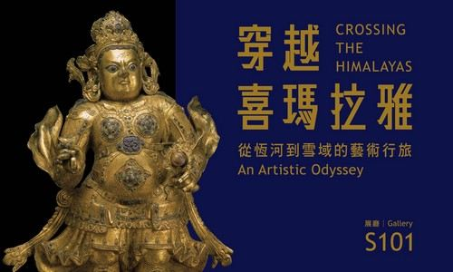
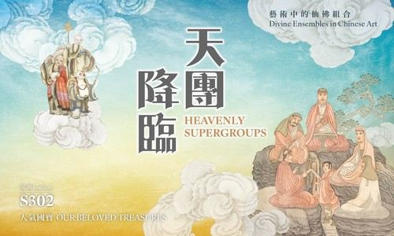
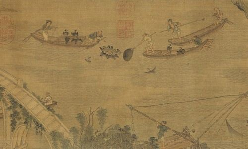
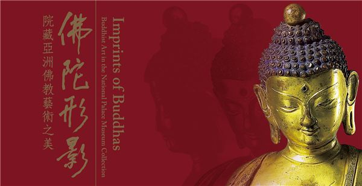
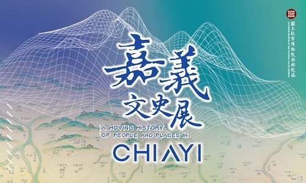

故宮南院
National Palace Museum · Southern Branch
Architecture
以水墨筆法
寫成的建築
南院建築以濃墨、飛白、渲染三種水墨筆法為設計概念；墨韻樓外牆由三萬多枚鑄鋁圓盤組成，近看有雲龍紋路，晴天最好拍。


至德湖・覽月橋
Before You Go
出發前，
先看這裡
館內至少留 3–4 小時。早上開館人最少，戶外拍照留到下午三點以後的斜陽。
11/11 開展：「知漁之樂──漁樂圖特展」（S203 2F）。
週一休館：戶外園區照常開放。
資料確認日期：2026 年 11 月 7 日
- 展廳・週二至週五
- 09:00–17:00
- 展廳・週末與國定假日
- 09:00–18:00
- 戶外園區
- 05:00–22:00免費・全年開放
- 全票
- NT$150未滿 18 歲、學生免費
Explore
開始規劃
- 全票（NT$）
- 0
- 園區面積（公頃）
- 0
- 覽月橋長（公尺）
- 0
- 戶外園區開到
- 0:00
照片：B2322858（公有領域）、Yu tptw（CC BY-SA 4.0）、Saimmx（CC0），Wikimedia Commons
資料來源
官方與旅遊平台
- 國立故宮博物院南部院區官網
- 官網・票價
- 官網・大眾運輸（含高鐵接駁、BRT 7212 時刻表）
- 官網・開放時間
- 官網・當期展覽與各展覽介紹
- 官網・公共藝術
- 官網・光環境
- 官網・園區平面圖
- 台糖・蒜頭蔗埕文化園區常見問答
- 雲嘉南濱海國家風景區・高跟鞋教堂
- 雲嘉南濱海國家風景區・東石漁人碼頭
- 林業及自然保育署・鰲鼓濕地森林園區
- 嘉義縣文化觀光局・配天宮
- 國家文化資產網・朴子配天宮
- OpenStreetMap（園區景點位置、車程估算）
- 交通部觀光署
- Trip.com 旅遊指南
- KKday 部落格
- 四方通行旅遊網
- 好好玩 FUNIT
- 食尚玩家
- udn 旅遊
- ETtoday 旅遊雲
- 微笑台灣
- LINE GO 交通攻略
- Tripool 交通整理
部落客
- 冒險安迪
- 涼子是也
- 艾瑪 吃喝玩樂札記
- 1817BOX
- 若曦的味旅人生
- Adam Start Living
- Mimigo
- 旅遊極短篇
- 太保美食懶人包（痞客邦）
- 酒窩小姊 sunny
- 安妮王的旅行記
- 開心 papago
- fullfenblog・太保景點
- WOMENT 建築視角
YouTube
個人整理・非官方網站。開放時間、票價與展覽可能調整，以故宮南院官網公告為準。
推薦行程
館內至少留 3–4 小時。早上開館人最少，戶外拍照留到下午三點以後的斜陽。
出發
依出發地抓好時間，09:00 開館時抵達。開車可停南側 P1、P2；搭大眾運輸的話，可接 08:30 從高鐵嘉義站發車的 BRT 7212，或 08:45 的免費接駁車。
展覽3F 往下逛
3F 天團降臨、佛陀形影 → 2F 東亞茶文化、書法新媒體、漁樂圖 → 1F 穿越喜瑪拉雅特展。可在售票處租語音導覽。
午餐
館內 1F 野爺鍋物（假日建議訂位），或開車 5–10 分鐘到太保市區吃築日食堂、丁家魯肉飯、食光雞火雞肉飯。
展覽補看展廳＋禮品店
回展廳補看上午沒看完的，或看嘉義文史展，再逛禮品店。
園區環湖散步
至善湖、至德湖步道，覽月橋、草間彌生《南瓜精靈》。
拍照至美橋拍墨韻樓
從至美橋回望館體是最經典的角度，傍晚斜陽最好拍。
日落與晚餐
11–12 月約 17:15 日落，拍完夕陽開車 11 分鐘到朴子，吃真好味鴨肉羹（18:30 打烊）、麻糬棟，週六還有朴子夜市。
回程
開車從朴子接台 82 上國道。這時已沒有回高鐵站的大眾運輸（末班見交通頁），沒開車的話要叫計程車。
想順遊蒜頭糖廠（園區 08:00–17:00，開車約 6 分鐘）的話，把 14:45 的環湖散步換成糖廠，16:00 再回南院拍至美橋。
Day 1南院慢慢看＋夜遊
出發
開車，或搭高鐵到嘉義站再轉 BRT 7212、免費接駁車。
展覽南院展館
不用趕，三層樓完整看完，再加看嘉義文史展。
午餐
館內野爺鍋物，或太保市區小吃。
展覽補看展廳＋禮品店
上午沒看完的展廳在這時補齊。
蒜頭糖廠
假日可搭五分車過去，逛蔗埕文化園區、吃枝仔冰。
拍照回南院看夕陽與夜景
園區開到 22:00，臨水廣場一帶夜間有燈光；夏季有水舞秀（2026 場次請查官網公告）。
入住
南院旁有長榮文苑等飯店；想逛夜市就住嘉義市區，去文化路夜市。
Day 2嘉義市區慢遊
早餐
雞肉飯或在地早餐店。
檜意森活村
日式木造宿舍群，散步拍照。BRT 7212 在文化中心站下車，年底前免費。
阿里山林業村／北門驛
就在旁邊，看老火車與車庫。
午餐
市區小吃，砂鍋魚頭也很有名。
嘉義公園＋射日塔
登塔看嘉義市景。
回程
提早出發避開晚間車潮。
下雨與季節
- 下雨天展廳全在室內，雨天就把時間留給 3 層展廳，照「看展」頁的動線慢慢看，午餐在館內 1F 解決。停車場到本館要走一段戶外步道，園區內有接駁車往返停車場與一館接駁站，班次以官網「園區內接駁服務」為準。
- 5–9 月午後雷陣雨多，戶外拍照排在上午或傍晚，中午進展廳避雨避曬。颱風天請先看官網有沒有休館公告。
- 10–4 月雨少、氣溫舒服，最適合環湖散步。冬天早晚涼、平原風大，帶件外套。
- 日落時間11–1 月約 17:15–17:30、3 月約 18:05、6 月約 18:45、10 月約 17:30（依南院經緯度計算）。至美橋夕陽與夜景都以這個時間往回推。
順遊景點
車程為從南院出發的估算，實際依路況而定。
 蒜頭糖廠蔗埕文化園區約 6 分・1.8 km
蒜頭糖廠蔗埕文化園區約 6 分・1.8 km就在南院北側，免費入園，08:00–17:00。可看百年糖蜜槽、搭五分車；五分車班次與票價以台糖公告為準。
導航攝影：Teng Feng-Chou・CC BY-SA 3.0 朴子配天宮約 11 分・6.4 km
朴子配天宮約 11 分・6.4 km主祀媽祖，清康熙年間創建，列為古蹟；元宵節的「御賜燈花」是當地最有特色的慶典。可以和朴子的鴨肉羹、麻糬棟排在一起。
導航攝影：WU PEI HSUAN・CC BY-SA 4.0 鰲鼓濕地森林園區約 23 分・18 km
鰲鼓濕地森林園區約 23 分・18 km由台糖農場積水形成的大片濕地，11 月到隔年 3 月是賞鳥季。林業署資料寫 09:00–16:30、週一休，出發前請再確認。
導航攝影：lienyuan lee・CC BY 3.0

看展與拍照
展廳從 3 樓往下逛最順。展覽會輪替，出發前請再上官網核對。
換檔：天團降臨 12/6 展完第 III 期，12/8 起換第 IV 期展件。
展覽資訊確認日期：2026 年 11 月 7 日
建議動線
- 3FS301 導覽大廳 → S302 天團降臨 → S303 佛陀形影約 1 小時 15 分
- 2FS202 東亞茶文化 → S203 漁樂圖 → S204 書法新媒體約 1 小時 15 分
- 1FS101 穿越喜瑪拉雅 → 嘉義文史展約 1 小時 15 分
停留時間是依展廳規模估算，全部看完約 3.5–4 小時；時間不夠就先看 1F 特展和 3F。
當期展覽

穿越喜瑪拉雅：從恆河到雪域的藝術行旅
集結美國魯賓喜瑪拉雅藝術博物館、大都會藝術博物館、華特斯藝術博物館與本院收藏，沿著恆河平原到西藏的路線看佛教藝術的流傳。
- 《金剛鬘》組畫之四曼荼羅：15 世紀紐瓦爾畫師為西藏俄寺所繪，保存近乎完美的唐卡。
- 南天王像：院藏 15 世紀紅銅鎏金造像，高 67.8 公分，鑲嵌青金石與綠松石。
建議停留約 1 小時・本期第一優先

天團降臨：藝術中的仙佛組合
八仙、福祿壽三星、和合二仙、十八羅漢……這些神仙「團體」是怎麼組成的。北院國寶輪流南下，每期展件不同。
- 明 吳彬《畫楞嚴廿五圓通佛像》冊（重要古物），分兩期展出。
- 清 雕象牙八仙渡海臂擱、竹雕和合二仙、乾隆洋彩開光十八羅漢膽瓶（重要古物）。
建議停留約 30 分

知漁之樂──漁樂圖特展
歷代畫家筆下的理想漁人生活：江上撒網的舟楫、蘆荻深處垂釣的漁父，以及漁暇時移舟相聚的宴飲。11/11 以後出發才看得到。
建議停留約 20 分
常設展

佛陀形影S303 3F院藏亞洲佛教藝術，從印度、東南亞到西藏與中國。必看藏文《龍藏經》、誕生佛、佛塔欄楯，護法神「持鉞刀黑天」與印度教女神像「杜爾噶砍殺魔牛」。約 40 分。- 東亞茶文化展S202 2F分「明人雅集」「清代品茗」「蒙藏奶茶」「日本茶文化」等單元，看各地怎麼喝茶。展品有長沙窯綠釉單柄壺、黑釉木葉紋茶盞、洋彩番蓮紋紅地茶壺。約 30 分。
- 揮翰學書—書法跨域新媒體展S204 2F四個互動單元：臨摹體驗、拓碑體驗、「千文宇宙」沉浸互動劇場、筆畫拼拼看，可以在平板上描摹書法。約 25 分。

嘉義文史展1F嘉義舊稱諸羅，清乾隆年間林爽文事件後，乾隆皇帝御筆改名為「嘉義」。展覽從這段故事講起，看完特展可以順路逛。約 15 分。
展覽圖片：故宮南院官網
園區地圖
景拍照點 藝公共藝術 P停車場 車公車／接駁站。點標記看說明；位置取自 OpenStreetMap。
戶外拍照點


公共藝術
- 草間彌生《南瓜精靈》她少數的石雕作品，花崗石加馬賽克，高約 176 公分，招牌圓點很好認。在本館東側，順著環湖路線就會經過。
- 千住博《亙古流長》南側 P2 停車場附近兩座玻璃屏風加起霧裝置，靈感來自阿里山的雲海與瀑布。
- 方惠光《古今華表》至美橋旁高 640 公分，以龍、象、馬三種圖騰代表中華、印度、波斯文化。
- 涂維政《鑑古爍今－繁花似錦》北側入館路線兩面各 900 塊交趾陶，北面紋樣取自院藏明永樂青花花卉紋扁壺，換角度看會有立體感。
- 王文志《戲分茶》大千石庭附近三顆金色鏤空茶團，象徵嘉義的茶產業。
夜間光環境
園區開到 22:00，日落後點燈；以下為官網介紹的光環境作品。
- 湖映至美至美橋以故宮瓷器的紅釉、粉青、霽青、甜白四色照亮橋身，湖面有倒影。
- 傍水揮毫臨水廣場投影院藏瓷器、琺瑯器與書法上的紋樣，例如龍鳳、牡丹、蝴蝶與黃庭堅的〈花氣薰人帖〉。
- 絲路尋境圓形廣場地面標示海上與陸上絲路，入夜後以水藍色波光呈現。
- 藝術光河藝術之丘園區高點定時放送雷射光束。
如何到南院
開車
國道接台 82 快速道路
國道 1 號或國道 3 號接台 82 東石嘉義線往太保，依指標到故宮大道。小客車停車每次約 NT$50–60。
假日南側停車場容易滿，可改停北側停車場，再搭園區免費接駁車（約 30 分一班）。
高鐵 ＋ 接駁
高鐵嘉義站轉乘
搭高鐵到嘉義站；搭台鐵的話，可在新左營、新烏日等與高鐵共站的車站換乘。
由 2 號出口轉乘：BRT 7212（往朴子）到「故宮南院(1館接駁站)」，或搭高鐵免費接駁車（週二至週日，約每小時一班）。計程車約 NT$180–250。
| 往南院（高鐵站發車） | 回高鐵（南院發車） | |
|---|---|---|
| 免費接駁車 | 08:45 起每小時 :45，末班 16:45 假日加開 17:35 | 09:30 起每小時 :30，16:30、17:20 假日加開 18:20 |
| BRT 7212 | 08:30 起約每小時 :30，末班 17:30 11:50 加開一班 | 08:50、09:40、09:50、10:50、11:50、12:10、12:50、13:50、14:50、15:50、17:00，末班 17:50 |
免費接駁週二至週日行駛（官網 2025/07 版時刻表）；BRT 依嘉義客運 2026/09/01 版時刻表，詳細班次以官網為準。
其他公車：166、7235 到「故宮南院站（南大門）」；黃 9 到 1 館接駁站；105 到「故宮南院北站」，下車後走約 15 分鐘到入口。
假日五分車
想體驗再搭
台糖「尋蜜號」往返蒜頭糖廠與南院北側停車場，以假日行駛為主，班次少。
大人票約 NT$150（南院線），一定要先查台糖官網時刻表。
周邊美食
館內選擇不多，太保市區開車 5–10 分鐘就有很多小吃。點編號可在地圖上定位。
店名旁的「營業中／休息中」依整理到的營業時間與台灣時間推算，國定假日和臨時公休無法反映。
標記依地址定位，可能與實際入口有些許落差；朴子夜市、文化路夜市為路段位置。虛線圈是距南院的直線距離；點編號可看從南大門（P1 停車場）開車的估算距離與時間，實際依路況而定。
南院周邊
太保市區開車約 5 分鐘
朴子
嘉義市
地址、營業時間整理自部落客與旅遊媒體（2020–2026），店家可能調整，出發前請以 Google 地圖或電話確認。
素食：南院周邊沒有查到專門的素食餐廳，上列店家也沒有可靠的素食資訊；需要素食請先打電話詢問。
出發前確認
實用撇步
優惠票
未滿 18 歲、本國學生、身障者及一位陪同者免費；65 歲以上本國籍長者 2026 年平日、假日都免費；嘉義縣市居民下午 3 點後免費（至 12/31）。
週一原則休館
2026 年有配合連假的週一開館日，請查官網公告。戶外園區天天開放。
寄物櫃
本館 2F 售票處旁有投幣式寄物櫃（退幣型），大包包先寄再看展。
展廳規定
展廳內禁止飲食與閃光燈，部分展件不能拍照，請依現場標示。
防曬與好走的鞋
園區約 70 公頃，戶外幾乎沒遮蔭。帶帽子、水壺，傍晚加防蚊液。
免費開放日
1/1、元宵節、5/18、9/27、10/10 全館免費參觀，人潮也最多。